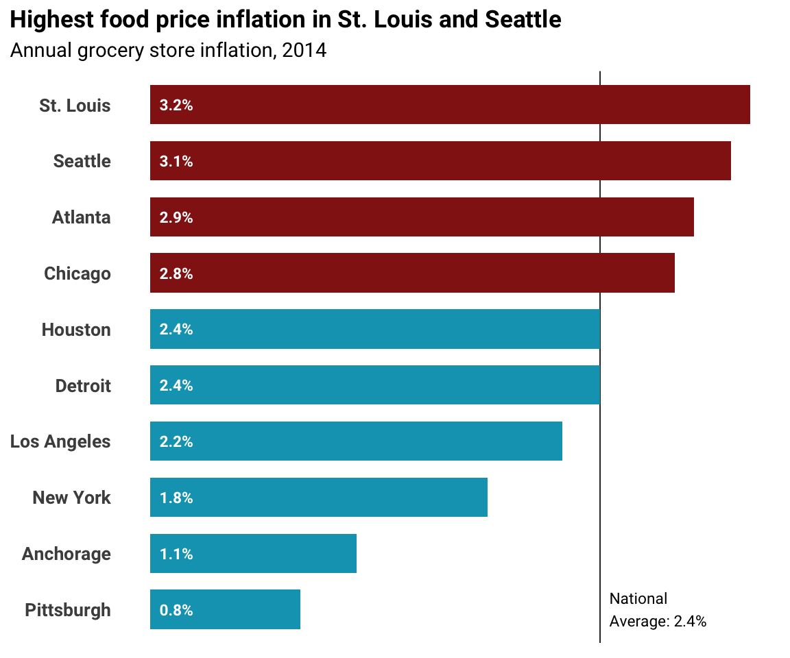
Economic Policy Visualization
Visualization
Pioneers of data visualization
William Playfair (1759-1823)

[created: 1786]
John Snow (1813-1858)
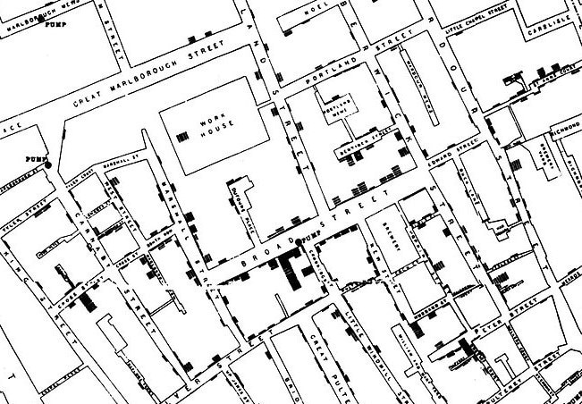

[created: 1854]
Charles Joseph Minard (1781-1870)

[created: 1869]
W.E.B. Du Bois (1868-1963)

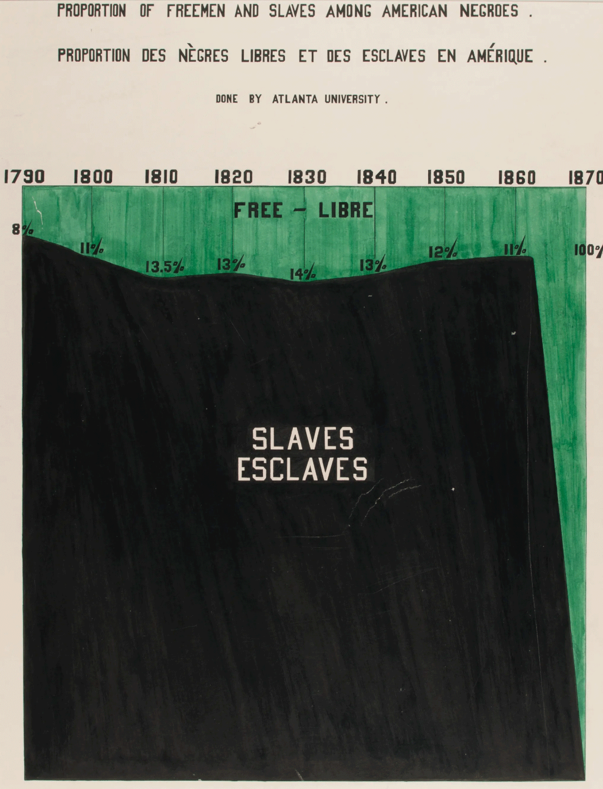
[created: 1890]
Otto Neurath (1882-1945)
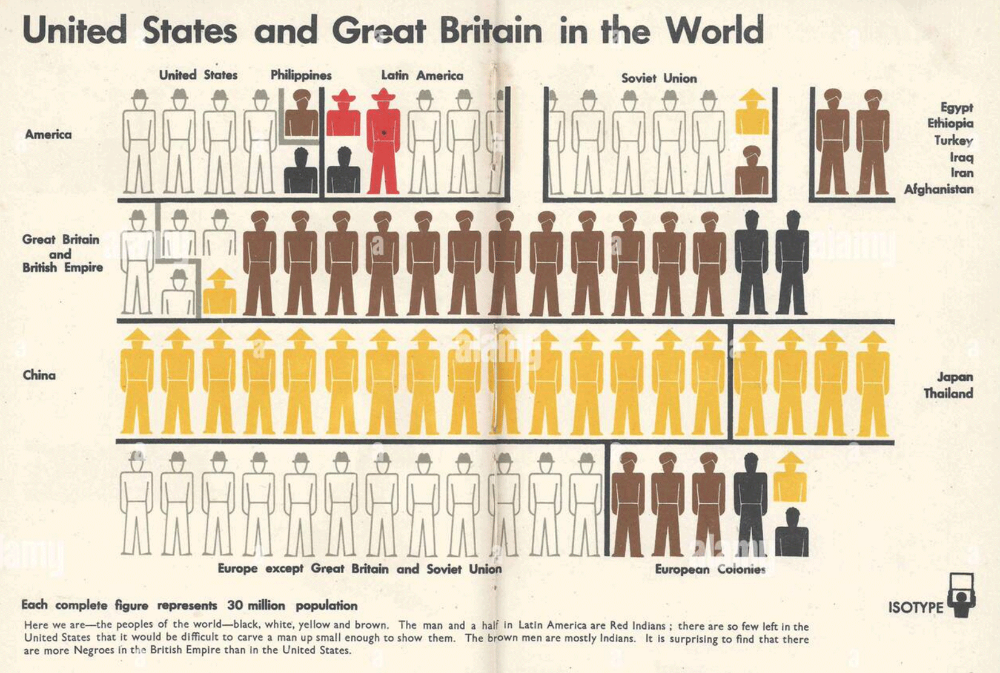
[created: 1943]
Five guidelines for better visualization
1. Choose the adequate type of graph
Bad:
Good:
── Attaching core tidyverse packages ──────────────────────── tidyverse 2.0.0 ──
✔ dplyr 1.1.2 ✔ readr 2.1.4
✔ forcats 1.0.0 ✔ stringr 1.5.0
✔ ggplot2 3.4.3 ✔ tibble 3.2.1
✔ lubridate 1.9.2 ✔ tidyr 1.3.0
✔ purrr 1.0.2
── Conflicts ────────────────────────────────────────── tidyverse_conflicts() ──
✖ dplyr::filter() masks stats::filter()
✖ dplyr::lag() masks stats::lag()
ℹ Use the conflicted package (<http://conflicted.r-lib.org/>) to force all conflicts to become errors
Good:
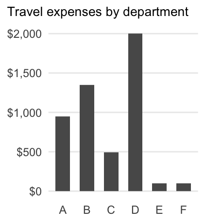
- Choose a chart type with respect to your data (numeric, categorical, ranking, time series etc.)
- What would you like to show: comparison, distribution, composition, relationship?
- To help you find the adequate type from a myriad of alternatives, you can also take a look at https://www.data-to-viz.com and https://datavizproject.com
A simple decision tree of chart types

2. Visualize data accurately and faithfully
Bad: 
Good: 
- Prioritize data accuracy, clarity, and integrity
- Avoid misleading the reader by truncating the y-axis, using two different y-axis, cherry-picking data, not providing context, etc.
- A good story based on data visualization does not involve deceptive manipulation of the data!
Source: Dougherty/Ilyankou (2021)
Example


Source: Patient
Another example


A third example
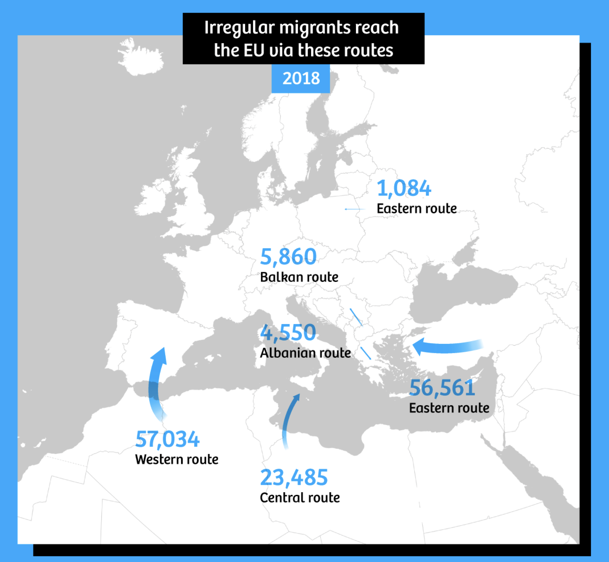
Source: The Correspondent
3. Integrate graphics and text
Bad: 
Good: 
- Don’t make people turn their head to read labels
- Think about a logical order of the chart (alphabetical, values)
- Add direct labels rather than a legend
- Choose a meaningful title that focuses on your message
Source: Dougherty/Ilyankou (2021)
Best practice


Sources: Washington Post, chezVoila
4. Reduce the clutter
Bad: 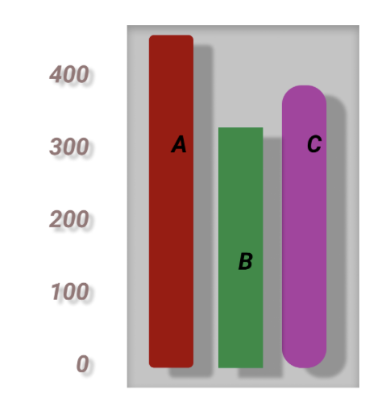
Good: 
- Unnecessary visual elements distract the readers from the central data
- Avoid elements that do not contain information!
- Basic elements like heavy tick marks or gridlines should be removed
- Think carefully which visual elements are really needed to read the chart
Source: Dougherty/Ilyankou (2021)
Best practice

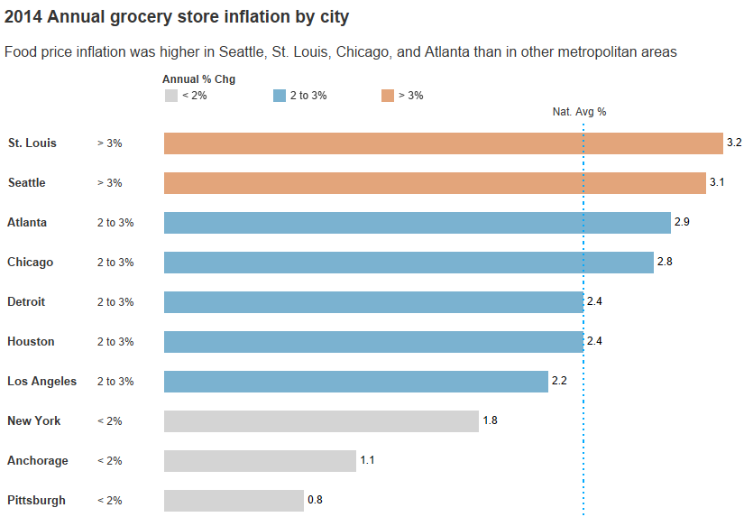
Sources: BlueGranite
5. Avoid the spaghetti chart and start with gray
Bad:
Good:

Good:
Warning: Using `size` aesthetic for lines was deprecated in ggplot2 3.4.0.
ℹ Please use `linewidth` instead.
- When the graph contains too much information, it looks like spaghetti
- Try to break overloaded single charts into smaller parts (facets, small multiples) or highlight the relevant information
- Start with gray: you are forced to be strategic in the use of color, labels, etc.
Best practice


Source: Schwabish (2014)
Deceptive graphs


Quelle: Lauer/OBrien (2020)
Deceptive graphs
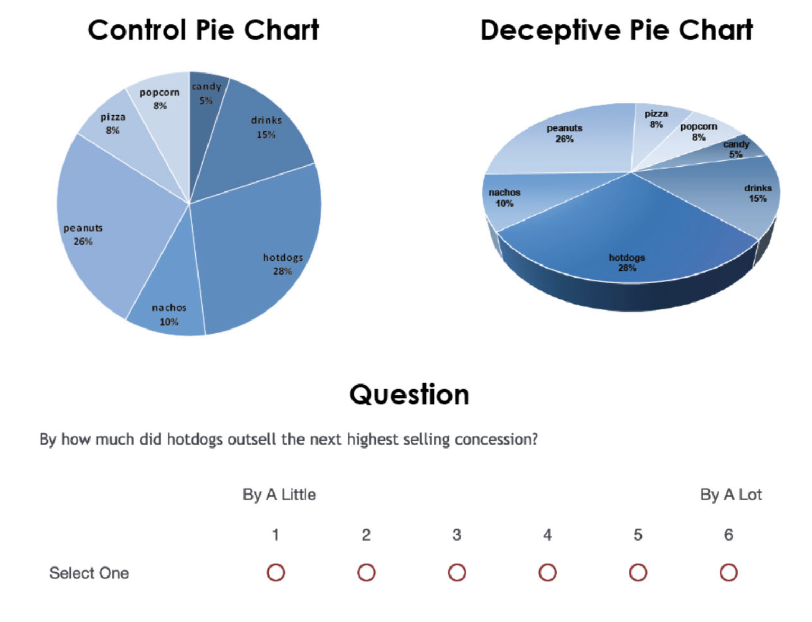

Quelle: Lauer/OBrien (2020)
Misleading titles
Quelle: Lauer/OBrien (2020)
Deceptive graphs meet their goal

Quelle: Lauer/OBrien (2020)
The Gestalt Principles
What are the Gestalt Principles?
Gestalt Principles describe how humans group similar elements, recognize patterns and simplify complex images. “Gestalt” is German for “unified whole”.
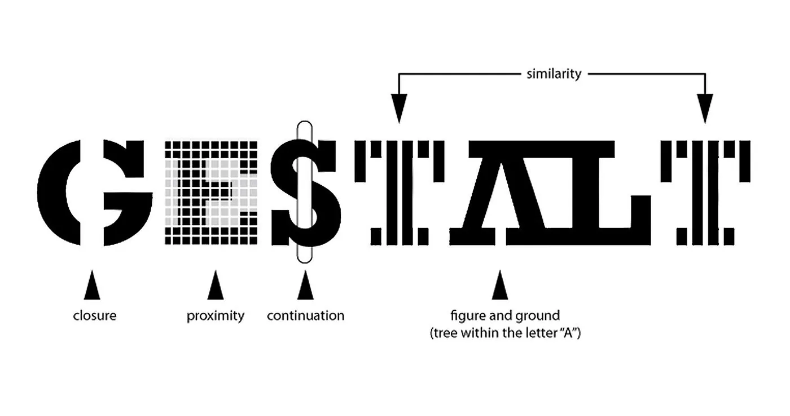
The question is how humans typically gain meaningful perceptions from the chaotic stimuli around them. The idea is that the mind “informs” what the eye sees by perceiving a series of individual elements as a whole.
Which chart is random and which has structure in it?
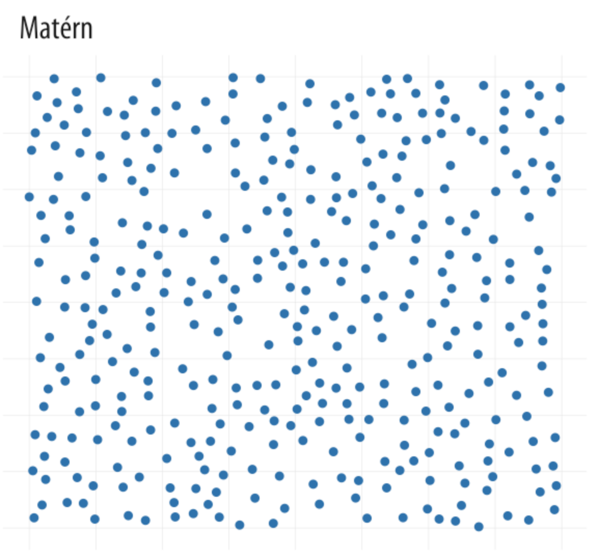
Source: Healy (2018)
Gestalt rules
- Proximity Things that are spatially near to one another seem to be related.
- Similarity Things that look alike seem to be related.
- Connection Things that are visually tied to one another seem to be related.
- Continuity Partially hidden objects are completed into familiar shapes.
- Closure Incomplete shapes are perceived as complete.
- Figure and Ground Visual elements are taken to be either in the foreground or the background.
- Common Fate Elements sharing a direction of movement are perceived as a unit.
Source: Healy (2018)
Our brains look for structure
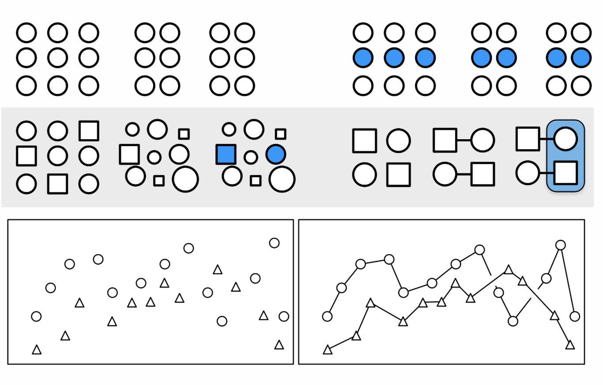
Source: Healy (2018)
Let’s start with {ggplot}
The grammar of {ggplot}
| Component | Function | Explanation |
|---|---|---|
| Data | ggplot(data) | The raw data that you want to visualise. |
| Aesthetics | aes() | Aesthetic mappings between variables and visual properties. |
| Geometries | geom_*() | The geometric shapes representing the data. |
| Statistics | stat_*() | The statistical transformations applied to the data. |
| Scales | scale_*() | Maps between the data and the aesthetic dimensions. |
| Coordinate System | coord_*() | Maps data into the plane of the data rectangle. |
| Facets | facet_*() | The arrangement of the data into a grid of plots. |
| Visual Themes | theme() | The overall visual defaults of a plot. |
Source: Scherer (2022)
Geometries and aesthetic mapping
| Geometries | Aesthetics | Scales | Dimensions |
|---|---|---|---|
| points | positions (x, y) | scale_x_*(), scale_y_*() | position (continuous, discrete, reverse, log10, sqrt, date) |
| lines | colors (color, fill) | scale_color_*(), scale_fill_*() |
colors (continuous, discrete, manual, gradient, gradient2, brewer) |
| polygons | shapes (shape, linetype) | scale_shape_*(), scale_linetype_*() | shapes (continuous, discrete, manual, ordinal) |
| text | size (size) | scale_size_*(), scale_radius_*() | sizes (continuous, discrete, manual, ordinal, area, date) |
| boxplot | transparency (alpha) | scale_alpha_*() | transparency (continuous, discrete, manual, ordinal, date) |
| …many more! | groupings (group) |
Source: Scherer (2022)
First steps
data |> ggplot(aes(x = bill_length_mm,
y = bill_depth_mm)) +
geom_point(size = 1.5, alpha = 0.5)Warning: Removed 2 rows containing missing values (`geom_point()`).
Colors

Scales
data |> ggplot(aes(x = bill_length_mm,
y = bill_depth_mm,
color = species)) +
geom_point(size = 1.5, alpha = 0.5) +
scale_color_manual(values = MetBrewer::met.brewer("Lakota")) +
scale_x_continuous(limits = c(30,60), breaks = seq(30,60,10)) +
scale_y_continuous(limits = c(12,21), breaks = seq(12,21,3)) +
theme_minimal()Warning: Removed 8 rows containing missing values (`geom_point()`).
Labels
data |> ggplot(aes(x = bill_length_mm,
y = bill_depth_mm,
color = species)) +
geom_point(size = 1.5, alpha = 0.5) +
scale_color_manual(values = MetBrewer::met.brewer("Lakota")) +
scale_x_continuous(limits = c(30,60), breaks = seq(30,60,10)) +
scale_y_continuous(limits = c(12,21), breaks = seq(12,21,3)) +
labs(x = "Bill length (in mm)", y = "Bill depth (in mm)",
title = "Penguins are awesome",
subtitle = "Depth and length of bills") +
theme_minimal()Warning: Removed 8 rows containing missing values (`geom_point()`).Annotation rather than legend
data |> ggplot(aes(x = bill_length_mm,
y = bill_depth_mm,
color = species)) +
geom_point(size = 1.5, alpha = 0.5) +
scale_color_manual(values = MetBrewer::met.brewer("Lakota")) +
scale_x_continuous(limits = c(30,60), breaks = seq(30,60,10)) +
scale_y_continuous(limits = c(12,21), breaks = seq(12,21,3)) +
annotate("text", x = c(34.7, 55.7, 50.7), y = c(20.7, 19, 13.6),
color = MetBrewer::met.brewer("Lakota")[1:3],
label = c("Adélie","Chinstrap","Gentoo"), fontface = "bold", size = 4) +
labs(x = "Bill length (in mm)", y = "Bill depth (in mm)",
title = "Penguins are awesome",
subtitle = "Depth and length of bills") +
theme_minimal() +
theme(legend.position = "none")Warning: Removed 8 rows containing missing values (`geom_point()`).
Themes
data |> ggplot(aes(x = bill_length_mm,
y = bill_depth_mm,
color = species)) +
geom_point(size = 1.5, alpha = 0.5) +
scale_color_manual(values = MetBrewer::met.brewer("Lakota")) +
scale_x_continuous(limits = c(30,60), breaks = seq(30,60,10)) +
scale_y_continuous(limits = c(12,21), breaks = seq(12,21,3)) +
annotate("text", x = c(34.7, 55.7, 50.7), y = c(20.7, 19, 13.6),
color = MetBrewer::met.brewer("Lakota")[1:3],
label = c("Adélie","Chinstrap","Gentoo"), fontface = "bold", size = 4) +
labs(x = "Bill length (in mm)", y = "Bill depth (in mm)",
title = "Penguins are awesome",
subtitle = "Depth and length of bills") +
theme_minimal() +
theme(legend.position = "none",
plot.title.position = "plot",
plot.title = element_text(size = 16, face="bold"),
plot.subtitle = element_text(size = 13),
panel.grid.minor = element_blank())Warning: Removed 8 rows containing missing values (`geom_point()`).
Calculate median and standard deviation
data_summary <- data |>
group_by(species) |>
summarise(across(c(bill_length_mm, bill_depth_mm),
list(median = ~median(., na.rm = TRUE),
sd = ~sd(., na.rm = TRUE))))
data_summary# A tibble: 3 × 5
species bill_length_mm_median bill_length_mm_sd bill_depth_mm_median
<fct> <dbl> <dbl> <dbl>
1 Adelie 38.8 2.66 18.4
2 Chinstrap 49.6 3.34 18.4
3 Gentoo 47.3 3.08 15
# ℹ 1 more variable: bill_depth_mm_sd <dbl>Median
data |> ggplot(aes(x = bill_length_mm,
y = bill_depth_mm,
color = species)) +
geom_point(size = 1.5, alpha = 0.5) +
geom_errorbar(
data = data_summary,
aes(x = bill_length_mm_median,
ymin = bill_depth_mm_median - bill_depth_mm_sd,
ymax = bill_depth_mm_median + bill_depth_mm_sd,
color = species,
color = after_scale(colorspace::darken(color, .2, space = "combined"))),
inherit.aes = FALSE, width = .5, size = .8) +
geom_errorbar(
data = data_summary,
aes(y = bill_depth_mm_median,
xmin = bill_length_mm_median - bill_length_mm_sd,
xmax = bill_length_mm_median + bill_length_mm_sd,
color = species,
color = after_scale(colorspace::darken(color, .2, space = "combined"))),
inherit.aes = FALSE, width = .25, size = .8) +
scale_color_manual(values = MetBrewer::met.brewer("Lakota")) +
scale_x_continuous(limits = c(30,60), breaks = seq(30,60,10)) +
scale_y_continuous(limits = c(12,21), breaks = seq(12,21,3)) +
annotate("text", x = c(34.7, 55.7, 50.7), y = c(20.7, 19, 13.6), color = MetBrewer::met.brewer("Lakota")[1:3], label = c("Adélie","Chinstrap","Gentoo"), fontface = "bold", size = 4) +
labs(x = "Bill length (in mm)", y = "Bill depth (in mm)",
title = "Penguins are awesome",
subtitle = "Depth and length of bills") +
theme_minimal() +
theme(legend.position = "none",
plot.title.position = "plot",
plot.title = element_text(size = 16, face="bold"),
plot.subtitle = element_text(size = 13),
panel.grid.minor = element_blank())Warning: Duplicated aesthetics after name standardisation: colour
Duplicated aesthetics after name standardisation: colourWarning: Removed 8 rows containing missing values (`geom_point()`).
Final plot
Warning: Duplicated aesthetics after name standardisation: colour
Duplicated aesthetics after name standardisation: colourWarning: Removed 8 rows containing missing values (`geom_point()`).
Bibliography
References
Dougherty, Jack/Ilyankou, Ilya (2021). Hands-on data visualization: Interactive storytelling from spreadsheets to code. O’Reilly Media.
Healy, Kieran (2018). Data visualization: A practical introduction. Princeton University Press.
Lauer, Claire/OBrien, Shaun (2020). How people are influenced by deceptive tactics in everyday charts and graphs. IEEE Transactions on Professional Communication, 63(4), 327–340. DOI: 10.1109/tpc.2020.3032053
Scherer, Cédric (2022). Graphic design with ggplot2. https://rstudio-conf-2022.github.io/ggplot2-graphic-design/
Schwabish, Jonathan A. (2014). An economist’s guide to visualizing data. Journal of Economic Perspectives, 28(1), 209–234. DOI: 10.1257/jep.28.1.209